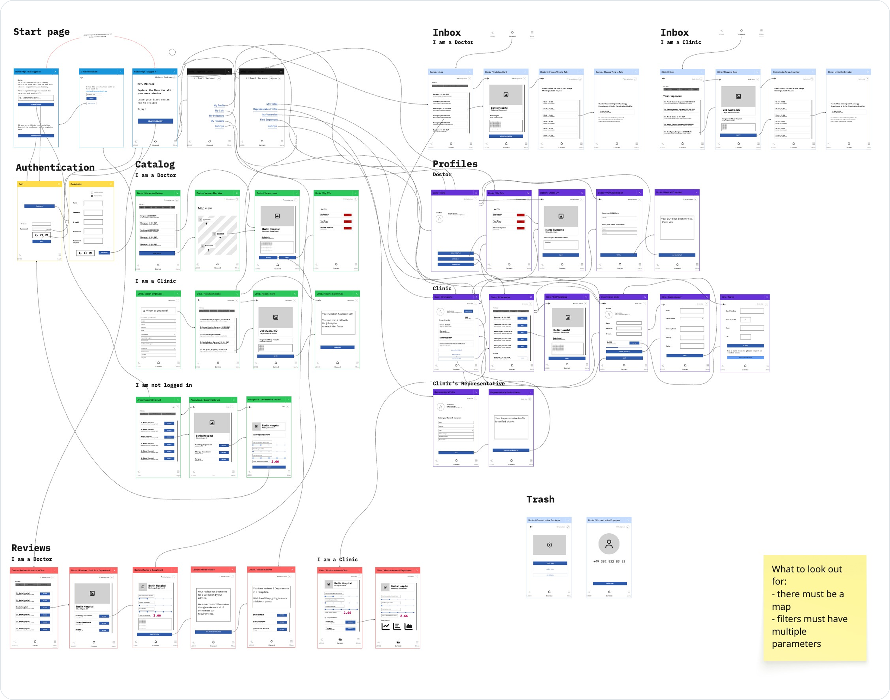
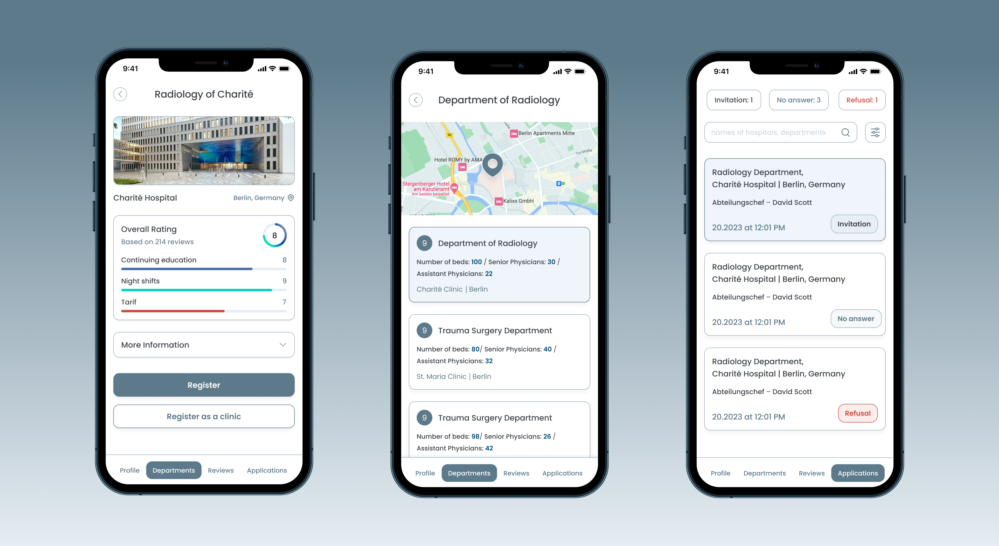

MedixBridge is a startup digital recruitment platform connecting doctors, medical students, and clinics in Germany. Designed from the ground up, it automates job applications, credential verification, and interview scheduling, ensuring compliance with German healthcare regulations while optimizing hiring efficiency.
Role & Execution
Brought in at the idea stage, I led the product’s UX/UI, developed the platform architecture using CJM & JTBD methodologies, and orchestrated a seamless, scalable solution. I worked closely with the CEO and product manager, ensuring business objectives were met while optimizing user experience.
Competitive Analysis & Research
To develop a platform that stands out, we conducted in-depth competitor research. The analysis revealed several key gaps in the market:
- Competitor: Lacked real-time department availability data in hospitals.
- Competitor: The credential verification process was cumbersome and required manual intervention.
- Competitor: Did not offer an integrated interview scheduling tool.
Identified Market Gaps:
- Lack of real-time department insights – No competitor provided live data on department availability, making it harder for candidates to make informed decisions.
- Manual verification processes – Many platforms relied on manual verification, which increased the risk of delays and fraud.
- Absence of an interview scheduling system – No platform allowed direct scheduling between candidates and clinics, causing unnecessary delays.
JTBD & Hypotheses
Following the competitive research, I defined JTBD (Jobs to Be Done) hypotheses to guide the platform’s features:
miro:

Task
It was necessary to create a concept for a platform that would combine tradition and modernity, develop a personal account that would simplify working with a large amount of materials and courses on the site, simplify the process of searching for materials according to interests and requests, as well as create an admin panel for content management, which would allow adding new information to the site quickly and conveniently.

-
Doctors and students need a seamless way to find verified job
opportunities
Hypothesis: A centralized, automated job-matching system will increase successful placements.
-
Clinics require transparency regarding candidates’
credentials to reduce hiring risks
Hypothesis: An automated verification system ensures document authenticity and reduces risks.
-
Interview scheduling should be simplified for both parties
Hypothesis: Integrating interview scheduling tools will streamline communication and improve hiring efficiency.
-
Real-time department data is crucial for informed job decisions
Hypothesis: A smart map with real-time data on bed availability and training opportunities will help job seekers make better-informed decisions.
-
Applicants without reviews may struggle to find jobs
Hypothesis: A feedback system from previous employers will boost candidates’ credibility and improve their chances of being hired.
-
Doctors relocating between cities need assistance in transitioning
Hypothesis: The platform should facilitate relocation support to make transitions smoother for doctors moving to new workplaces.

Key Stages of the Customer Journey Map (CJM):
CJM overview:
- fon.png)
Service map:

Login/Signup & Account Confirmation:
Optimized authentication flows for frictionless onboarding.

Doctor Profile & Resumes:
Created structured CV templates and credential verification.

Job Applications & Reviews:
Integrated a centralized dashboard for tracking applications and receiving feedback.
Clinic Management Dashboard:
Built tools for managing applications, reviewing doctor profiles, and tracking departments.
Department and Job Information:
Developed a feature with real-time department data and available opportunities, empowering candidates to make well-informed decisions.
Catalog & Department Insights:
Designed real-time department tracking for informed job searches.
Automated Verification & Scheduling:
Streamlined credential validation and interview coordination.
Interview Scheduling:
Implemented an efficient, integrated scheduling tool to facilitate direct communication between candidates and clinics, removing intermediaries.
- fon- 2.png)
Key Challenges & Solutions
After mapping out the user journey, we faced several challenges, which I addressed through tailored solutions:
- Inefficient job search and credential verification:
- Limited access to department data
- Cumbersome interview scheduling
Core Architecture & Results
I structured the platform with a scalable, automated system to enhance efficiency and transparency.
Key Platform Features:
- 🔹 Doctor Dashboard – Profile setup, CV management, applications, reviews.
- 🔹 Clinic Dashboard – Real-time department tracking, verified CVs with an option to schedule an initial online interview before relocation.
- 🔹 Automated Verification – Secure document authentication, reducing fraudulent applications.
Results & Impact:
Efficiency & Automation
- ✅ Optimized hiring workflow – Streamlined job search, application, and verification, reducing hiring time.
- ✅ Seamless credential validation – Automated verification eliminated manual checks, reducing clinic workload.
- ✅ Frictionless onboarding – Simplified signup and profile setup improved adoption rate.
Trust & Transparency
- ✅ Verified hiring ecosystem – Secure credential authentication increased trust between clinics and candidates.
- ✅ Data-driven decision making – Real-time department insights helped clinics make informed hiring choices.

User Engagement & Conversion
- ✅ Intuitive UX/UI framework – Clean, structured design improved navigation and usability.
- ✅ Enhanced user retention – Integrated feedback system strengthened credibility and engagement.
- ✅ Smart job-matching – Personalized recommendations increased successful placements.


This project was a medical startup, and I played a key role in developing MedixBridge from the ground up, transforming the CEO’s idea into a fully functional product tailored for the German market.
As a Product UI/UX Designer, I am committed to delivering impactful and user-centric solutions. This project reflects my ability to design and structure complex platforms while ensuring seamless user experiences. I am always open to new professional opportunities and collaborations.
Novus Team: Sales & Branding Enhancement